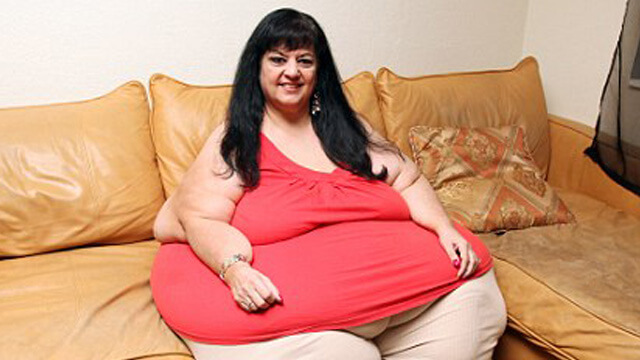

<div class="contenedor">
  

  <section class="sombra">
      <h1 class="peso">Tienes <span class="p6"> Obesidad Tipo 3 </span></h1>
      <div class="peso__info">
          <div>
              <h3 class="info">Causas de <span class="p6"> Obesidad Tipo 3 </span></h3>
              <p>
                Una obesidad se considera mórbida o tipo 3 cuando el IMC es superior a 40, en tanto que el de una persona con peso normal se sitúa por debajo de 25. Si en los últimos años la obesidad es un problema de salud creciente incluso entre la población infantil. Ello implica que la principal consecuencia de la obesidad mórbida es un importante riesgo de muerte prematura, tanto más cuanto mayor es el IMC.
                
            </p>
            <p>
                Las enfermedades cardiovasculares son probablemente la causa más importante de esta elevada mortalidad y también la más conocida, ya que con ella coexisten la diabetes tipo 2, la hipetensión arterial, la hipercolesterolemia, la arterioesclerosis, etc.
            </p>
          </div>
          <div>
              
          </div>
      </div>
  
      <div>
          <h1 class="text__diet">Te damos una dieta personalizada</h1>
          <p>
              aquí va lo de la dietaaaaaaaaaaaaaaaaaaaaa..........
          </p>
      </div>
  </section>
  
  
  
  </div>